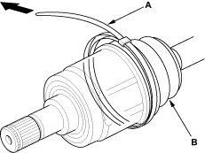
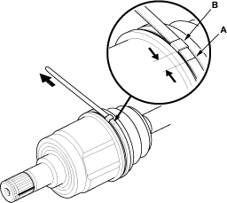
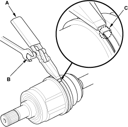
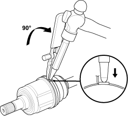

- Fit the boot ends onto the driveshaft and the inboard joint, then install the band (A) onto the boot (B).
NOTE: When replacing the band only, install the double loop band.

- Pull up the slack in the band by hand.
- Mark a position (A) on the band 10 - 14 mm (0.4 - 0.6 in.) from the clip (B).

- Thread the free end of the band through the nose section of the commercially available boot band tool KD-3191 or equivalent (A) and into the slot on the winding mandrel (B).

- Place a wrench on the winding mandrel of the boot band tool and tighten the band until the marked spot (C) on the band meets the edge of the clip.
- Lift up the boot band tool to bend the free end of the band 90 degrees to the clip. Centre-punch the clip, then fold over the remaining tail onto the clip.
